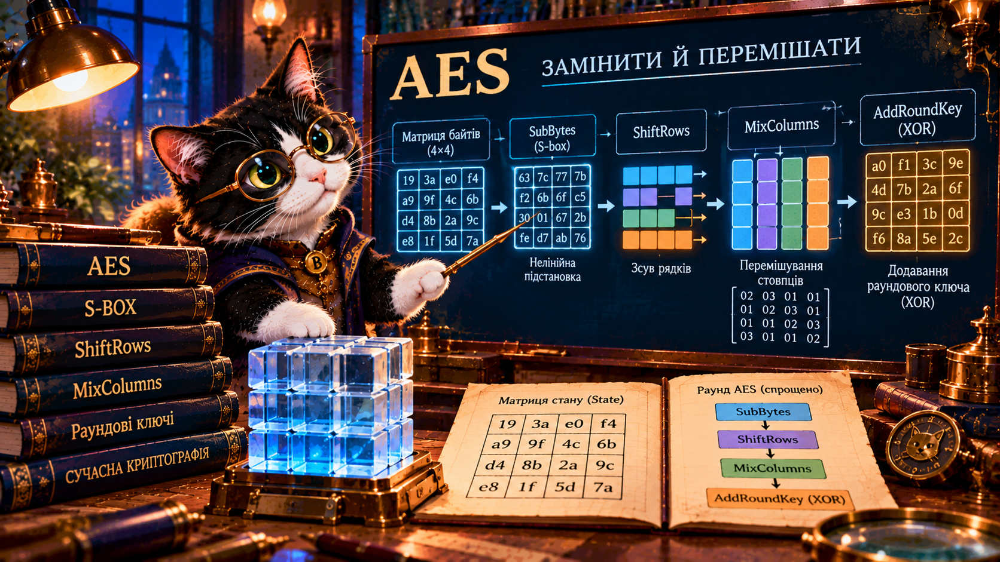

1. Збери матрицю
Перетягніть 16 байтів у правильні позиції AES.
ПочатиЯк кілька різних оборотних перетворень разом захищають дані?
Буч досліджує не стару шифрувальну машину, а сучасну матрицю з 16 байтів. Змінюйте її крок за кроком і простежуйте результат.

Перестановка лише змінює місця байтів, а підстановка змінює значення. AES поєднує різні дії та раундовий ключ, створюючи складну залежність між повідомленням і шифротекстом.
Блок: 128 біт = 16 байтів. Ключі: 128, 192 або 256 біт. Раундів відповідно 10, 12 або 14.
AES — мережа підстановок і перестановок (SPN), а не мережа Фейстеля.
Схема показує типовий раунд. В останньому раунді AES операцію MixColumns пропускають. Раундові ключі отримують з основного ключа за окремим алгоритмом.
Початкові 16 байтів 00…0F розкладено за стовпцями. Кожен крок підсвічує змінені комірки. Натискайте вперед і назад.
У цьому симуляторі SubBytes та MixColumns справжні, але раундовий ключ спеціально фіксований для навчання. Це не повне AES-шифрування.
Змініть перший байт і порівняйте результат одного навчального раунду. Спробуйте знайти, які вихідні байти змінилися.
Команда А тільки переставляє байти файлу. Команда Б поєднує оборотні підстановки, перемішування та секретний ключ. Чий підхід ближчий до сучасного блокового шифру? Поясніть, спираючись на результати симуляцій.
Порівняйте: що змінює лише позиції, що — значення, що поширює вплив одного байта, а що залежить від секретного ключа.